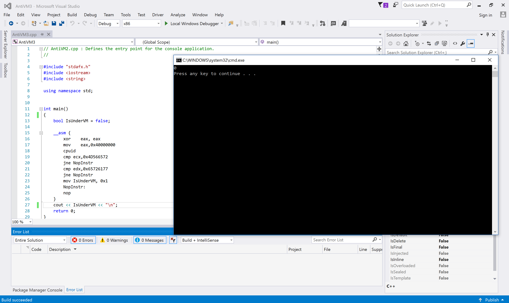

[The picture of this post is taken by one of my best friends, Ahmad Ghazi in Chitgar Lake !]
Introduction
You should by now be aware of everything, cause the topic’s title clearly describes the contents of this post.
As you know, almost all of the modern malware programs use some bunch of packers or protectors and using such tools cause malware to be weaponized with Anti-VM techniques which makes it impossible for reverse-engineers and analyzer to detect what’s happening inside the malware (or sometimes they implement their own methods to detect the VM presence).
Reverse-engineers always prefer to run the malware inside a Virtual Machine environment to avoid their computer to be affected by malware programs and this gives them lots of features like creating a snapshot from malware’s (VM) previous state.
In the rest of the post, I’m gonna show you some of the popular methods that use CPUID instruction in order to detect whether they’re running on a virtual machine or not.
Why CPUID?
CPUID is an instruction-level detection method and these kinds of methods are really hard to detect, as you know to trap on every execution of CPUID, you should either execute the instructions step by step(which is really slow and almost impossible) or instrument the target program. If you use instrumentation, then you might also defeat anti-instrument techniques.
Let see some examples.
Examples
As this great article in cyberbit describes:
The first method:
- CPUID__: This instruction is executed with EAX=1 as input, the return value describes the processors features. The 31st bit of ECX on a physical machine will be equal to 0. On a guest VM it will equal to 1.
The second method:
“Hypervisor brand”: by calling CPUID with EAX=40000000 as input,1 the malware will get, as the return value, the virtualization vendor string in EAX, ECX, EDX.
For example:
- Microsoft: “Microsoft HV”
- VMware : “VMwareVMware”
The Practical Implementation
For the first example I write the following code :
1
2
3
4
5
6
7
8
9
10
11
12
13
14
15
16
17
18
19
20
21
22
23
24
#include "stdafx.h"
#include <iostream>
using namespace std;
int main()
{
bool IsUnderVM = false;
__asm {
xor eax, eax
inc eax
cpuid
bt ecx, 0x1f
jc UnderVM
NotUnderVM:
jmp NopInstr
UnderVM:
mov IsUnderVM, 0x1
NopInstr:
nop
}
cout << IsUnderVM;
return 0;
}
The above code set eax=1 and executes the CPUID instruction, after that the result of ecx is checked to determine whether the 31st bit is set or not, the result is finally saved on “IsUnderVM” variable.
Now the second example:
1
2
3
4
5
6
7
8
9
10
11
12
13
14
15
16
17
18
19
20
21
22
23
24
25
#include "stdafx.h"
#include <iostream>
#include <string>
using namespace std;
int main()
{
bool IsUnderVM = false;
__asm {
xor eax, eax
mov eax,0x40000000
cpuid
cmp ecx,0x4D566572
jne NopInstr
cmp edx,0x65726177
jne NopInstr
mov IsUnderVM, 0x1
NopInstr:
nop
}
cout << IsUnderVM;
return 0;
}
The above code set eax=0x40000000 and then compares the ecx and edx against 0x4D566572 and 0x65726177 which are known and static values for VMWare products, like the first example, the result will finally save into “IsUnderVM”.
Note that, this implementation of method only works on VMWare, but if you want it to work in other vendors like VirtualBox or Hyper-V, then you have to detect what is their vendor string, it’s simple but as long I currently don’t have VBox or Hyper-V VM then you should do it by yourselves if you want to test it on other vendors.
Let see how it works!
The following picture is the first example when running on a host machine.
When it runs in a virtual environment, then the result is.
The following picture is the second example when running on a host machine.

When it runs in a virtual environment, then the result is.
You can clearly see, the difference in execution under a virtual environment and non-virtual environment.
How to defeat?
Now you might ask yourselves, Is it possible to change the CPUID results of the target virtual machine from host perspective?
Yep!
Fortunately, all the popular virtual machine vendors give the host machine an opportunity to modify CPUID and CPU features. This is because everytime your virtual machine fetches a CPUID instruction and wants to execute it, a VM-Exit happens and now hypervisor passes the execution to VMM, so this the best time of modifying CPUID result to bypass the above Anti-VM techniques.
In VMWare, you can find where your virtual machine is located, then find .vmx (config file) of your target VM then add the following line at the end of the file:
1
cpuid.1.ecx="0---:----:----:----:----:----:----:----"
Make sure to restart your VM and now the result of the first example is reversed!
The bypass for the second method is really dependent on the implementation. This might not work in your case but in my case, I can easily add the following lines to the .vmx config file.
1
2
cpuid.40000000.ecx="0000:0000:0000:0000:0000:0000:0000:0000"
cpuid.40000000.edx="0000:0000:0000:0000:0000:0000:0000:0000"
Now the second method gives the wrong results to the malware.
There is a good question here, which you can read in order to perform the same thing in VirtualBox but as I don’t have VBox in my machine right now, then you should do it by yourself.
The other vendors also give the same features to you so you can search for changing CPUID in your vendor and get the same results.
Summary
In this post, I described an Anti-Anti-VM technique in which you can use them to circumvent an Anti-VM malware. In the future posts, I’ll describe more about other Anti-VM techniques and the way you can defeat them, so make sure to stay connected!
References
- [Anti-VM and Anti-Sandbox Explained] (https://www.cyberbit.com/blog/endpoint-security/anti-vm-and-anti-sandbox-explained)
- [Virtualbox, how to force a specific CPU to the guest] (https://superuser.com/questions/625648/virtualbox-how-to-force-a-specific-cpu-to-the-guest)
Comments powered by Disqus.